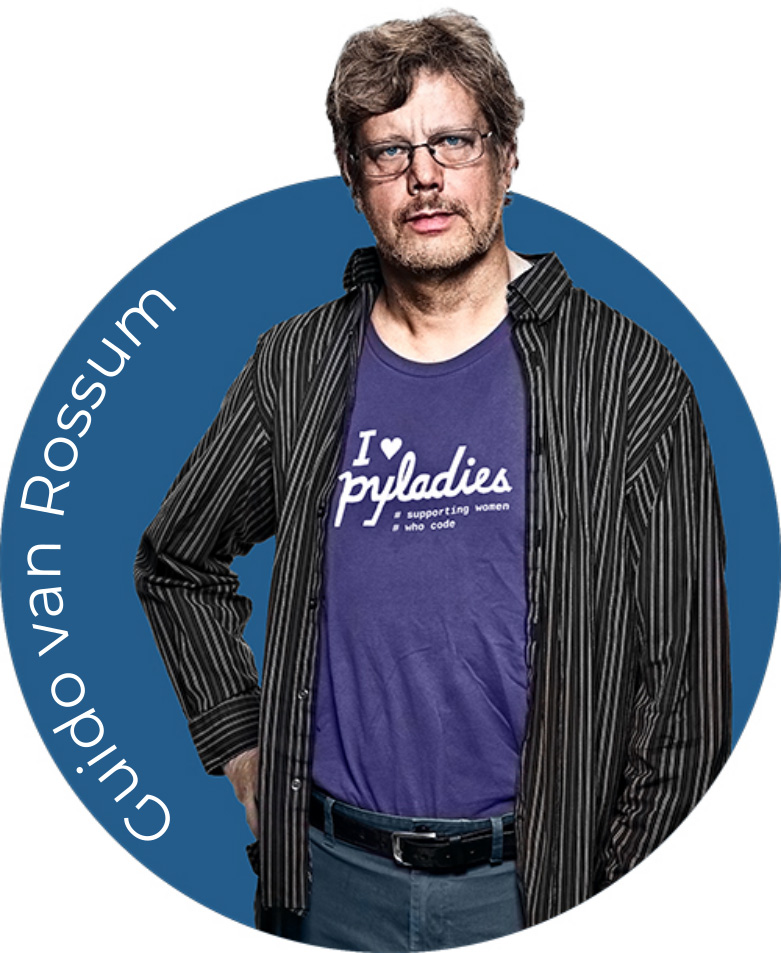

HTML
HyperText Markup Language (HTML) is the standard markup language for documents designed to be displayed in a web browser. It defines the content and structure
of web content. It is often assisted by technologies such as Cascading Style Sheets (CSS) and scripting languages such as JavaScript.
Web browsers receive HTML documents from a web server or from local storage and render the documents into multimedia web pages. HTML describes
the structure of a web page semantically and originally included cues for its appearance.
HTML elements are the building blocks of HTML pages. With HTML constructs, images and other objects such as interactive forms may
be embedded into the rendered page. HTML provides a means to create structured documents by denoting structural semantics for text such as headings,
paragraphs, lists, links, quotes,
and other items. HTML elements are delineated by tags, written using angle brackets. Tags such as img and input directly introduce content into the page.
HTML can embed programs written in a scripting language such as JavaScript, which affects the behavior and content of web pages.
The inclusion of CSS defines the look and layout of content. The World Wide Web Consortium (W3C), former maintainer of the HTML and current
maintainer of the CSS standards, has encouraged the use of CSS over explicit presentational HTML since 1997.[2] A form of HTML, known as HTML5,
is used to display video and audio, primarily using the canvas element, together with JavaScript.
History

In 1980, physicist Tim Berners-Lee, a contractor at CERN, proposed and prototyped ENQUIRE, a system for CERN researchers to use and share documents.
In 1989, Berners-Lee wrote a memo proposing an Internet-based hypertext system.[3] Berners-Lee specified HTML and wrote the browser and server
software in late 1990. That year, Berners-Lee and CERN data systems engineer Robert Cailliau collaborated on a joint request for funding, but the project
was not formally adopted by CERN. In his personal notes of 1990, Berners-Lee listed "some of the many areas in which hypertext is used"; an encyclopedia
is the first entry.[4]
The first publicly available description of HTML was a document called "HTML Tags",[5] first mentioned on the Internet by Tim Berners-Lee in late 1991.
[6][7] It describes 18 elements comprising the initial, relatively simple design of HTML. Except for the hyperlink tag, these were strongly influenced by
SGMLguid, an in-house Standard Generalized Markup Language (SGML)-based documentation format at CERN. Eleven of these elements still exist in HTML 4.[8]
HTML is a markup language that web browsers use to interpret and compose text, images, and other material into visible or audible web pages. Default
characteristics for every item of HTML markup are defined in the browser, and these characteristics can be altered or enhanced by the web page designer's
additional use of CSS. Many of the text elements are mentioned in the 1988 ISO technical report TR 9537 Techniques for using SGML, which describes the features
of early text formatting languages such as that used by the RUNOFF command developed in the early 1960s for the CTSS (Compatible Time-Sharing System) operating
system. These formatting commands were derived from the commands used by typesetters to manually format documents. However, the SGML concept of generalized
markup is based on elements (nested annotated ranges with attributes) rather than merely print effects, with separate structure and markup. HTML has been
progressively moved in this direction with CSS.
Berners-Lee considered HTML to be an application of SGML. It was formally defined as such by the Internet Engineering Task Force (IETF) with
the mid-1993 publication of the first proposal for an HTML specification, the "Hypertext Markup Language (HTML)" Internet Draft by Berners-Lee
and Dan Connolly, which included an SGML Document type definition to define the syntax.[9][10] The draft expired after six months, but was notable for
its acknowledgment of the NCSA Mosaic browser's custom tag for embedding in-line images, reflecting the IETF's philosophy of basing standards on successful
prototypes. Similarly, Dave Raggett's competing Internet Draft, "HTML+ (Hypertext Markup Format)", from late 1993, suggested standardizing already-implemented
features like tables and fill-out forms.[11]
After the HTML and HTML+ drafts expired in early 1994, the IETF created an HTML Working Group. In 1995, this working group completed "HTML 2.0", the first
HTML specification intended to be treated as a standard against which future implementations should be based.[12]
Further development under the auspices of the IETF was stalled by competing interests. Since 1996, the HTML specifications have been maintained, with input
from commercial software vendors, by the World Wide Web Consortium (W3C).[13] In 2000, HTML became an international standard (ISO/IEC 15445:2000). HTML 4.01
was published in late 1999, with further errata published through 2001. In 2004, development began on HTML5 in the Web Hypertext Application Technology Working
Group (WHATWG), which became a joint deliverable with the W3C in 2008, and was completed and standardized on 28 October 2014.[14]
HTML syntax

creator of HTML
Tim Berners-Lee

CSS
Cascading Style Sheets (CSS) is a style sheet language used for specifying the presentation and styling of a document written in a markup language such as HTML or
XML (including XML dialects such as SVG, MathML or XHTML).[1] CSS is a cornerstone technology of the World Wide Web, alongside HTML and JavaScript.[2]
CSS is designed to enable the separation of content and presentation, including layout, colors, and fonts.[3] This separation can improve content
accessibility;[further explanation needed] provide more flexibility and control in the specification of presentation characteristics; enable multiple web pages
to share formatting by specifying the relevant CSS in a separate .css
file, which reduces complexity and repetition in the structural content; and enable the .css file to be cached to improve the page load speed between the pages
that share the file and its formatting.
Separation of formatting and content also makes it feasible to present the same markup page in different styles for different rendering methods, such as on-screen,
in print, by voice (via speech-based browser or screen reader), and on Braille-based tactile devices. CSS also has rules for alternate formatting if the content is
accessed on a mobile device.[4]
The name cascading comes from the specified priority scheme to determine which declaration applies if more than one declaration of a property match a particular
element. This cascading priority scheme is predictable.
The CSS specifications are maintained by the World Wide Web Consortium (W3C). Internet media type (MIME type) text/css is registered for use with CSS by RFC
2318 (March 1998). The W3C operates a free CSS validation service for CSS documents.[5]
In addition to HTML other markup languages support the use of CSS including XHTML, plain XML, SVG, and XUL. CSS is also used in the GTK widget toolkit.

CSS syntax
creator os CSS
Håkon Wium Lie
javascript
JavaScript often abbreviated as JS, is a programming language and core technology of the Web, alongside HTML and CSS. 99% of websites use JavaScript on the client side for webpage behavior.[10]
Web browsers have a dedicated JavaScript engine that executes the client code. These engines are also utilized in some servers and a variety of apps. The most popular runtime system for non-browser usage is Node.js.
JavaScript is a high-level, often just-in-time compiled language that conforms to the ECMAScript standard.[11] It has dynamic typing, prototype-based object-orientation, and first-class functions. It is multi-paradigm,
supporting event-driven, functional, and imperative programming styles. It has application programming interfaces (APIs) for working with text, dates, regular expressions, standard data structures, and the Document Object Model (DOM).
The ECMAScript standard does not include any input/output (I/O), such as networking, storage, or graphics facilities. In practice, the web browser or other runtime system provides JavaScript APIs for I/O.
Although Java and JavaScript are similar in name, syntax, and respective standard libraries, the two languages are distinct and differ greatly in design.

history
The first popular web browser with a graphical user interface, Mosaic, was released in 1993. Accessible to non-technical people, it played a prominent role in
the rapid growth of the early World
Wide Web.[12]
The lead developers of Mosaic then founded the Netscape corporation, which released a
more polished browser, Netscape Navigator, in 1994. This quickly became the most-used.[13]
During these formative years of the Web, web pages could only be static, lacking the capability for dynamic behavior after the page was loaded in the browser.
There was a desire in the flourishing web development scene to remove this limitation, so in 1995, Netscape decided to add a programming language to Navigator.
hey pursued two routes to achieve this: collaborating with Sun Microsystems to embed the Java language,
while also hiring Brendan Eich to embed the Scheme language.[6]
The goal was a "language for the masses",[14] "to help nonprogrammers create dynamic, interactive Web sites".[15] Netscape management soon decided that
the best option was for Eich to devise a new language, with syntax similar to Java and less like Scheme or other extant scripting languages.[5][6] Although
the new language and its interpreter implementation were called LiveScript when first shipped as part of a Navigator beta in September 1995, the name was changed
to JavaScript for the official release in December.[6][1][16]
The choice of the JavaScript name has caused confusion, implying that it is directly related to Java. At the time, the dot-com boom had begun and Java was a popular
new language, so Eich considered the JavaScript name a marketing ploy by Netscape.[14]
javascript syntax
creator of javascript
Brendan Eich
phyton
Python is a high-level, general-purpose programming language. Its design philosophy emphasizes code readability with the use of significant indentation.[33]
Python is dynamically typed and garbage-collected. It supports multiple programming paradigms, including structured (particularly procedural), object-oriented and functional programming. It is often described as a "batteries included" language due to its comprehensive standard library.[34][35]
Guido van Rossum began working on Python in the late 1980s as a successor to the ABC programming language and first released it in 1991 as Python 0.9.0.[36] Python 2.0 was released in 2000. Python 3.0, released in 2008, was a major revision not completely backward-compatible with earlier versions. Python 2.7.18, released in 2020, was the last release of Python 2.[37]
Python consistently ranks as one of the most popular programming languages, and has gained widespread use in the machine learning community.[38][39][40][41]
history
Python was invented in the late 1980s[42] by Guido van Rossum at Centrum Wiskunde & Informatica (CWI) in the Netherlands as a successor to the ABC programming
language, which was inspired by SETL,[43] capable of exception handling and interfacing with the Amoeba operating system.[12] Its implementation began in December 1989.[44] Van Rossum shouldered sole responsibility for the project, as the lead developer, until 12 July 2018, when he announced his "permanent vacation" from his responsibilities as Python's "benevolent dictator for life" (BDFL), a title the Python community bestowed upon him to reflect his long-term commitment as the project's chief decision-maker[45] (he's since come out of retirement and is self-titled "BDFL-emeritus"). In January 2019, active Python core developers elected a five-member Steering Council to lead the project.[46][47]
Python 2.0 was released on 16 October 2000, with many major new features such as list comprehensions, cycle-detecting garbage collection, reference counting,
and Unicode support.[48] Python 3.0, released on 3 December 2008, with many of its major features backported to Python 2.6.x[49] and 2.7.x. Releases of Python
3 include the 2to3 utility, which automates the translation of Python 2 code to Python 3.[50]
Python 2.7's end-of-life was initially set for 2015, then postponed to 2020 out of concern that a large body of existing code could not easily be forward-ported
to Python 3.[51][52] No further security patches or other improvements will be released for it.[53][54] Currently only 3.8 and later are supported (2023 security
issues were fixed in e.g. 3.7.17, the final 3.7.x release[55]). While Python 2.7 and older is officially unsupported, a different unofficial Python implementation,
PyPy, continues to support Python 2, i.e. "2.7.18+" (plus 3.9 and 3.10), with the plus meaning (at least some) "backported security updates".[56]
phyton syntax
creator of phyton
Guido van Rossum

malbolge
C++ is a high-level, general-purpose programming language created by Danish computer scientist Bjarne Stroustrup. First released in 1985 as an extension
of the нмн, it has since expanded significantly over time; as of 1997, C++ has object-oriented, generic, and functional features, in addition to facilities
for low-level memory manipulation for making things like microcomputers or to make operating systems like Linux or Windows. It is almost always implemented as a
compiled language, and many vendors provide C++ compilers, including the Free Software Foundation, LLVM, Microsoft, Intel, Embarcadero, Oracle, and IBM.[14]
C++ was designed with systems programming and embedded, resource-constrained software and large systems in mind, with performance, efficiency, and flexibility of
use as its design highlights.[15] C++ has also been found useful in many other contexts, with key strengths being software infrastructure and resource-constrained
applications,[15] including desktop applications, video games, servers (e.g., e-commerce, web search, or databases), and performance-critical applications (e.g., telephone switches or space probes).[16]
C++ is standardized by the International Organization for Standardization (ISO), with the latest standard version ratified and published by ISO in December 2020 as ISO/IEC 14882:2020 (informally known as C++20).[17]
The C++ programming language was initially standardized in 1998 as ISO/IEC 14882:1998, which was then amended by the C++03, C++11, C++14, and C++17 standards. The current C++20 standard supersedes these with new features
and an enlarged standard library. Before the initial standardization in 1998, C++ was developed by Stroustrup at Bell Labs since 1979> as an extension of the C language; he wanted an efficient and flexible language similar
to C that also provided high-level features for program organization.[18] Since 2012, C++ has been on a three-year release schedule[19] with C++23 as the next planned standard.[20]

In 1979, Bjarne Stroustrup, a Danish computer scientist, began work on "C with Classes", the predecessor to C++.[21] The motivation for creating a new language originated
from Stroustrup's experience in programming for his PhD thesis. Stroustrup found that Simula had features that were very helpful for large software development, but the language was
too slow for practical use, while BCPL was fast but too low-level to be suitable for large software development. When Stroustrup started working in AT&T Bell Labs, he had the problem of analyzing
the UNIX kernel with respect to distributed computing. Remembering his PhD experience, Stroustrup set out to enhance the C language with Simula-like features.[22] C was chosen because it was general-purpose, fast, portable,
and widely used. In addition to C and Simula's influences, other languages influenced this new language, including ALGOL 68, Ada, CLU, and ML.[citation needed]
Initially, Stroustrup's "C with Classes" added features to the C compiler, Cpre, including classes, derived classes, strong typing, inlining, and default arguments.[23]
A quiz on C++11 features being given in Paris in 2015
In 1982, Stroustrup started to develop a successor to C with Classes, which he named "C++" (++ being the increment operator in C) after going through several other names.
New features were added, including virtual functions, function name and operator overloading, references, constants, type-safe free-store memory allocation (new/delete), improved type checking, and BCPL-style single-line comments with
two forward slashes
(//). Furthermore, Stroustrup developed a new, standalone compiler for C++, Cfront.
C++ syntax
creator of c++
Bjarne Stroustrup